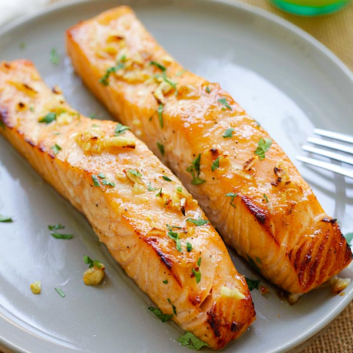

Honey Mustard Glazed Salmon

Elevate your dinner with our Honey Mustard Glazed Salmon recipe. Succulent salmon fillets are transformed into a
gourmet delight as they're brushed with a harmonious blend of honey, Dijon mustard, and aromatic seasonings.
Ingredients
- 4 salmon fillets
- 2 tablespoons honey
- 2 tablespoons Dijon mustard
- 1 tablespoon olive oil
- 1 teaspoon minced garlic
- Salt and black pepper, to taste
- Chopped fresh parsley, for garnish
- Lemon wedges, for serving
Steps
Step 1: Preheat the Oven:
- Preheat your oven to 375°F (190°C).
Step 2: Prepare the Glaze:
- In a small bowl, whisk together the honey, Dijon mustard, olive oil, minced garlic, salt, and black pepper
until well combined.
Step 3: Coat the Salmon:
- Place the salmon fillets on a baking sheet lined with parchment paper or lightly greased.
-
Brush the honey mustard glaze over the tops of the salmon fillets, ensuring they are evenly coated.
Step 4: Bake the Salmon:
- Bake the salmon in the preheated oven for about 12-15 minutes, or until the salmon flakes easily with a
fork. Cooking time may vary based on the thickness of the fillets.
Step 5: Serve:
- Carefully remove the salmon from the oven.
-
Garnish with chopped fresh parsley if desired.
- Serve the honey mustard glazed salmon with lemon wedges on the side for squeezing over the top.
Enjoy this delicious and flavorful honey mustard glazed salmon with your favorite side dishes for a quick and satisfying meal!